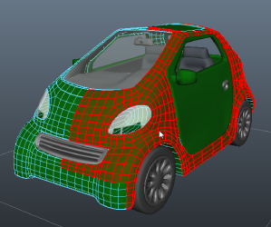

在场景中选择 UV 壳
- 在对象上单击鼠标右键，然后选择。
- 将光标移动到对象上以亮显各个壳。

- 单击一个 UV 壳并选中。
在“UV 编辑器”(UV Editor)中选择 UV 壳
- 在 UV 纹理编辑器中执行以下操作之一：
- 在 2D 视图中单击鼠标右键，选择“壳”(Shell)，然后单击以选中该壳。
- 在“UV 工具包”(UV Toolkit)中启用“UV 壳选择遮罩”(UV Shell selection mask) ()，然后单击选中壳。
- 在面选择模式下双击面。
提示： 若要将所选 UV 壳转化为其他组件模式，请在 2D 视图中按住 Ctrl 键并单击鼠标右键，然后从标记菜单中选择一个选项。
在“UV 编辑器”(UV Editor)中选择壳上的所有组件
- 双击单个顶点、面或 UV。
同一壳上该类型的所有已连接组件都将处于选定状态。
- 按住 Ctrl 键并双击单个顶点、面或 UV 以取消选择所有已连接组件。
在“UV 编辑器”(UV Editor)中取消选择壳上的所有组件
- 按住 Ctrl 键并双击单个顶点、面或 UV。
将取消选择同一壳上该类型的所有已连接组件。
在“UV 编辑器”(UV Editor)中选择边界边
- 双击边界边。
同一壳上的所有边界边都将处于选定状态。
在“UV 编辑器”(UV Editor)中选择共享相同质量的组件
- 切换到所需的组件选择模式。
- 在“UV 工具包”(UV Toolkit)中，转到“按类型选择”(Select By Type)区域并单击适当的按钮。
具有相应共同性的所有组件都将被选中。
注： 在对称的网格上（即使仅部分对称），您可以根据需要使用各种
“对称”(Symmetry)模式在网格的另一侧选择相应的 UV。有关对称的详细信息，请参见
对称编辑。